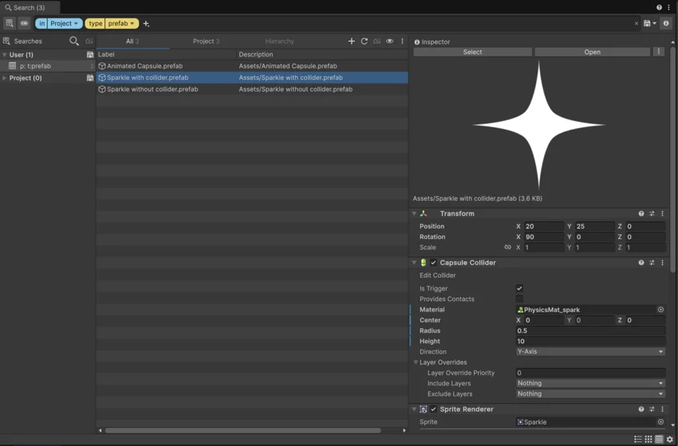
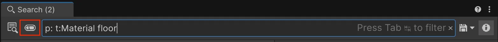

The Search window finds assets in your project, packages in Unity’s registry, assets from the Unity Asset Store, log information, and so on. You can compare items, view them in an Inspector tab, and act on them.
This page reviews the window’s interface.

To launch Search, do one of the following:
Tip: You can create your own shortcuts and menu items for custom searches. For more information, refer to Invoke from the main menu.
As well as the general Search window, you can also open the following specialized search windows:
Unity Search supports two search mechanisms:
Visual query builder: Use the visual query builder to create complex queries that combine multiple search tokens. For details, refer to Visual query builder.
Textual search: Enter a search query in the search field. For syntax and examples, refer to Textual query references.
The toggle for search mechanisms is next to the search field:

For autocomplete suggestions for the current query, press Tab.
Tab works with both the visual query builder and textual queries.
For textual queries, Tab shows autocomplete suggestions like filters, tokens, and recent searches.
For the visual query builder:
The Search window has three views:
Tip: The zoom slider controls the size of the search result thumbnails in the list and grid views. When the thumbnail is large enough, the view switches to the grid view. If it’s too small, the view switches to the list view.
The Search window can show an Inspector tab for a selected item. The tab shows a preview of the item if the item type supports previews, and the item’s components. You can also perform actions on the item, based on the item type.
To toggle the Inspector tab, select the Inspector icon () in the Search window.
To view an item in the Inspector tab, click the item in the search results.
For more information about the Inspector tab, refer to The Inspector window.
The Search window’s status bar shows the query’s status, search providers, number of results, and query run time.
To show or hide the status bar, from the Search window’s More (⋮) menu, select Status bar.
To add or remove result types, from the Search window’s View menu ():
For results from the File search provider, select Show more results.
For results from packages in the projects, such as their scripts and images, select Show package results. Show more results needs to be active for Show package results to work.
This option shows results from the Project window; it’s not the same as searching for packages with the PackagesA container that stores various types of features and assets for Unity, including Editor or Runtime tools and libraries, Asset collections, and project templates. Packages are self-contained units that the Unity Package Manager can share across Unity projects. Most of the time these are called packages, but occasionally they are called Unity Package Manager (UPM) packages. The Unity Package Manager (UPM) can display, add, and remove packages from your project. These packages are native to the Unity Package Manager and provide a fundamental method of delivering Unity functionality. However, the Unity Package Manager can also display Asset Store packages that you downloaded from the Asset Store. More info
See in Glossary provider.
To add or remove indices, from the Search window’s View menu ():
Adding and removing indices isn’t the same as using search providers. Instead, it changes what the search providers can search through. For more information, refer to Focus searches with search providers.
To cycle through search query changes:
You can save and reuse search queries. For more information, refer to Manage search queries.
To show or hide the saved queries list, select the Searches icon () in the Search window.
To change search preferences, click the gear icon in the Search window. For more information, refer to The Preferences window’s Search tab.